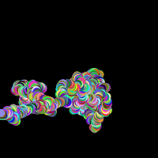
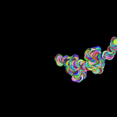
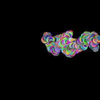
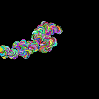
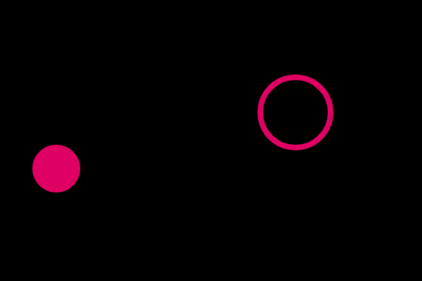
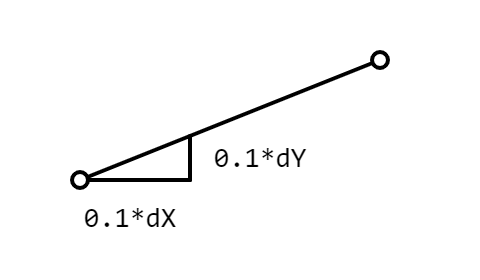
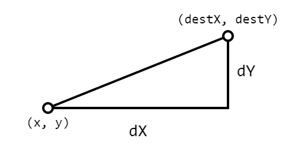

Open the Random Walk workspace in CodeHS. There you will find a circle whose location is defined by the variables x and y.
let x, y;
function setup() {
createCanvas(200, 200);
noStroke();
x = 100;
y = 100;
//draw the background during setup
background(0);
}
function draw() {
//No Background means nothing gets 'erased'
fill(255)
circle(x, y, 5);
//ToDo: Make a small change to x and y
}
Notice that there is a variable for both the x and the y of the circle that's being drawn. The setup function sets them to the center of the canvas, so if you run the program you should see the white dot in the middle of the canvas, but it is not moving.
In order to see movement, we need to make small changes to the location each time.
A classic exercise to do with this circle is called a Random Walk. This means moving the dot a little bit in a random direction each time the draw function runs. This will cause the dot to wander around the canvas and I've removed the background so that we can see the trail.
Modify the end of the draw() function to generate two small random values, between -2 and +2, and add them to the x and y variables. This means that each time draw() runs, the location changes by a small amount. Over time this will cause a 'wandering' style of movement.
Finally, add a little random color to spice up your Random Walk. Given a little time, you'll generate your own personal random blob thingy to put on your fridge.




Open the NSEW workspace, where you will find
let x, y;
function setup() {
createCanvas(200, 200);
rectMode(CENTER);
x = width / 2;
y = height / 2;
}
function draw() {
background(99);
rect(x, y, 30, 30);
}
//Called for every mouse click
function mousePressed() {
}
Like before, an x and y variable are used to represent the location of the rectangle being drawn, and they are initialized to the center of the canvas.
Click to Place
Go to the mousePressed function that's already been provided for you. It responds to every mouse press. Add the following code to set the global x and y to the current mouseX and mouseY.
x = mouseX; y = mouseY;
When you run the sketch, you should be able to change the location of the square by clicking around, but it should not permanently follow the mouse around the screen.
We've seen before that changing the location during the draw loop will cause movement to change.
For example, if you add x += 1; to the end of draw, it will cause the x to continually increase and the square will drift to the right. You could also say x -= 1; to subtract from x and go to the left
We also have a y variable that will allow us to move up or down. Remember that y = 0 is at the top of the screen, so y -= 1; will cause it to drift up the screen and y += 1; will cause it to go down.
Right now we can use any of the above statements to change the values of x and y and make the square drift, but that only allows the square to go one direction. Pasting all four lines at once will cause it to just sit there because both x and y will be increasing and decreasing every single time. A net gain of zero.
If we want to choose the direction that we want to go, we need variables to represent that choice. In our case, let's keep a global variable that will always hold the value "N", "S", "E", or "W". When we're moving the square we'll choose how to move based on its value.
Declare a global variable named dir
Initialize it to be "N" in the setup function. This should represent starting out moving North.
Once you have the dir variable declared and initialized, go to the end of the draw function and delete any x += 1; or y -= 1; statements that may still be there. Instead you need to have a four part if statement that first looks at the value of the new dir variable and changes x or y based on that. For example
if( dir == "N" ) y -= 1;
This code looks at dir to see what direction the dir variable is holding. If dir says "N", we subtract from the y to move up.
Add the if statement above to the end of your draw function and run the sketch to make sure that the square moves up the screen. After that, add three more parts to the if statement in your draw function to go "S", "E", and "W". Make sure that you test all four directions by assigning each letter and testing to make sure that the correct direction movement is produced.
We've looked at the contrain function before. It looks at a value and makes certain that it's between two values. You've no doubt noticed that x and y can grow or shrink out of control.
One easy way to stop this is to constrain the values of x and y right before the draw function ends. Make the following the last two lines of draw.
x = constrain(x, 0, width); //constrain x to window width y = constrain(y, 0, height); //constrain y to window height
Each statement here looks at the value of x or y, calls constrain and replaces the value of x with it. As long as this is the last thing that the draw function does, x and y will never end up outside of that range, no matter how many x += 1's have been called.
Run your program and see that it's constrained, but not perfectly. Since we're in rectMode(CENTER), we have to remember that we don't actually want x or y to reach 0. Keep in mind that the square is 30 x 30 and modify the two lines of code above so that the square is kept completely within the boundaries of the canvas.
Use the arrow keys to change direction for the square above.
CLICK HERE IF YOU CAN'T HANDLE THE DEMO'S SCROLLING PROBLEM
We've set up this sketch so that the dir variable is in charge of the direction. If we want to control the direction of the square, we'll have to respond to a key press. Just like with mousePressed() there is a function called keyPressed that will be called every time that a key on the keyboard is pressed.
Add the following function to your sketch after all the other functions.
function keyPressed(){
if( keyCode == UP_ARROW ){
dir = "N";
}
}
When a key is pressed, it's common to look at p5's global keyCode variable to see what key was just pressed. In the code above I compare it to UP_ARROW. This is how we detect that the up arrow was just pressed.
Since we previously set up the sketch so that the dir variable is in charge, if i want the square to move up I only need to assign "N" to the dir variable. Add three more if statements to cover the other directions. When you run your code, use the arrow keys to change the direction of the square. Warning: You have to click the canvas before it will respond to you.
Open the Lerping workspace in CodeHS. This time you will find two different locations defined by global variables: (x, y) and (destX, destY). Each location is used to draw a circle on the canvas.

At the moment the only way that we can change the sketch is by clicking the canvas with the mouse. The mousePressed() function changes the location of destX and destY, which will bring that circle to the mouse.
Our goal for this workspace is to make the 'xy' circle move towards the 'destination' circle. Instead of simply teleporting the 'xy' circle to its final location. We will make a small change to x and y during the draw() function, but this time we will calculate so that it moves in the direction of the destination circle.
For our movement, we are going to move (x, y) ten percent closer to (destX, destY) each time draw is called. To do this we need to look at dX and dY:

Notice in the diagram above that the values dX and dY represent the differences from x to destX and y to destY. Since we want to move only a small portion each draw(), we'll only add ten percent of dX and dY to our circle's x and y.

This will provide a smaller step but keep the direction that it needs to go. That way it will always be moving toward its location, but not in one big jump.
Modify the end of the draw function to:
If done properly, you should see one circle seeking out the 'destination' circle and stopping in its center. Clicking around should cause the destination circle to move and the seeking circle to follow.
Having a direction variable hold a value representing each direction is fine for our purposes, but a little bit limited in the long run. We're going to look at a second way, that will be a little more useful when we
A second way is to use a variable to represent how much to add to x or y.
Open the Directional Speeds workspace, which is similar to the NSEW workspace that you previously completed, but with a difference.
let x, y;
let xSpeed,ySpeed;
function setup() {
createCanvas(200, 200);
rectMode(CENTER);
x = width / 2;
y = height / 2;
xSpeed = 0;
ySpeed = 0;
}
function draw() {
background(99);
rect(x, y, 30, 30);
x += xSpeed;
y += ySpeed;
}
//Called for every mouse click
function mousePressed() {
x = mouseX;
y = mouseY;
}
//Called for every key press
function keyPressed() {
}
The dir variable is now gone. It has been replaced with two values: xSpeed and ySpeed. These values are currently set to 0. Later in the draw function you can see the lines:
x += xSpeed; y += ySpeed;
Since these values are both zero, x and y never change, but if you go to the setup function and initialize the values to something else
xSpeed = -1; ySpeed = 0;
Now the xSpeed variable is -1. This means that x += -1 will happen each time the draw loop runs and the square will drift to the left. If we want to drift down the screen, we would set the values so that y was steadily increasing and x was not.
xSpeed = 0; ySpeed = 1;
This is a different way of representing the motion of an object on the screen and it will allow us to move in more complex ways.
Your Task
Even though we don't have the dir variable to help us, we can still end up with the same code that responds to key presses. Add code only to the keyPressed function that will, like before, respond to the four arrow keys by changing the direction of the square. Make sure that you set xSpeed and ySpeed to a value each time, or you may get unexpected motion.
In the end, you should be able to control the square in exactly the same way as before, but without the use of the dir variable.
Submission:
Check to make sure that your code acts the same as the NSEW did, then copy your code below.
One way of keeping the square inside the canvas is to change the value of x or y to keep the square in bounds. Another would be to change the direction of the square, so that it moves back inside.
Copy the following to your editor. It creates a square that moves to the right forever.
let x, y;
let xSpeed,ySpeed;
function setup() {
createCanvas(200, 200);
rectMode(CENTER);
x = width / 2;
y = height / 2;
//Set to drift right
xSpeed = 1;
ySpeed = 0;
}
function draw() {
background(99);
rect(x, y, 30, 30);
x += xSpeed;
y += ySpeed;
//Check for wall bounce here
}
//Called for every mouse click
function mousePressed() {
x = mouseX;
y = mouseY;
}
//Called for every key press
function keyPressed() {
}
Right now the square drifts forever to the right, but when the x gets to be too large, we want to turn around. Since x is getting too large, we'll set xSpeed to be -1. This should cause x to start decreasing. Go to the section of the draw function that says ''Check for wall bounce here" and add this if statement:
if( x > width - 15){
xSpeed = -1;
}
Run the program and wait for it to hit the right side of the canvas. When it does, you should see it bounce back to the left.
Bouncing Back:
Now that it bounces off of the right side, it will infinitely drift to the left. Add another if statement that will check to see if x gets too low, and then set xSpeed back to a positive value.
Move On to the Y Direction.
Right now we've set up the code so that the square only moves horizontally. Now that the horizontal bounce is working, we should test the vertical bounce. Go to the setup function and change the speeds so that the square is only moving in the y direction
xSpeed = 0; ySpeed = 1;
This should cause the square to drift infinitely downward. Again go to the end of the draw loop and use if statements to switch the value of ySpeed when it gets too large or too small.
So far we have had very regulated values. We need more random! Every time that we run this program, we want to have a random location and a random speed. Now change the setup function so that it assigns to the four global variables using the random function.
x = random(15,width-15); y = random(15,height-15); xSpeed = random(-1,1); ySpeed = random(-1,1);
Notice that the random function uses 15 to accomodate for the size of the square. The random x and y that are generated are guaranteed to keep the square on the screen.
The speeds are randomized from -1 to +1. Negative values are important for the speed of the square. That's how we move left or up.
Test your program multiple times to make sure that the square always spawns in a random location with a different direction.
Right now we have a decent drifting block, but let's make it go faster. Update the setup function to the following
x = random(15, width - 15); y = random(15, height - 15); xSpeed = random(-5, 5); ySpeed = random(-5, 5);
The only difference is that the speeds are from -5 to +5. This should cause the square to start our moving much faster than before.
Problem: Keeping the Speed Up
Starting the speeds at larger values on affects the starting speed of the square, but you'll notice that the first time the square hits a wall it slows back down to 1 or -1 speed. We want to preserve the magnitude of the speed, only flip it to the opposite.
Solution Use the Variables!
When xSpeed starts out as +3, setting it to a -1 slows it down. Instead we would want the speed to be -3. The same magnitude, but in the opposite direction. This will require setting it to -xSpeed instead of -1.
if( x > width - 15 ){
xSpeed = -xSpeed; //Set it to its opposite
}
Modify all four if statements to use xSpeed and ySpeed like this.
Test your program several times. Each time the square should start with a random location and speed, and bouncing off of the walls should not slow it down.
Click above to re-randomize. Yours only needs to randomize on launch.